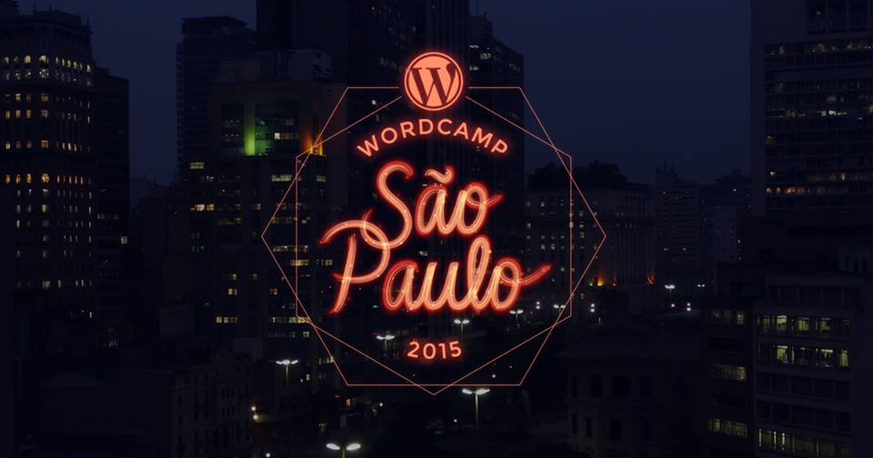

A 4º edição do WordCamp São Paulo chegou!
Marque as apresentações que você quer ver,
compartilhe com a hashtag #WordCampSP,
e aproveite!
Informações
PUC Consolação
Rua Marquês de Paranaguá, 111.
São Paulo - SP
{{showTrack(post, 'trilha')}} {{post.post_meta[0]['value'] | formatDate}}
{{post.content | htmlToPlaintext}}
{{post.post_meta[0]['value'] | formatHour}} {{showTrack(post, "local")}}